수능(국어영역) (2016-03-10 기출문제)
1. [A] ~ [E]에 대한 설명으로 적절하지 않은 것은?(1번 공통지문 문제)
- [A] : ‘사회자’의 요청에 따라 문제의 원인과 해결 방안을 제시하고 있다.
- [B] : ‘사회자’의 요청에 따라 해결 방안에 해당하는 사례를 소개하고 있다.
- [C] : 현실적인 여건을 고려하여, ‘김 교수’가 제시한 방안 중 일부를 검토하고 있음을 밝히고 있다.
- [D] : ‘김 교수’의 발언을 듣고 추가적으로 알고 싶은 사례의 제시를 요청하고 있다.
- [E] : 사례를 든 후, 청중이 제기한 문제점을 보완할 수 있는 방안을 제시하고 있다.
(정답률: 알수없음)

2. 토의 내용을 바탕으로 다음과 같이 선생님이 제시한 학습 활동을 수행한 결과로 적절하지 않은 것은? [3점](1번 공통지문 문제)
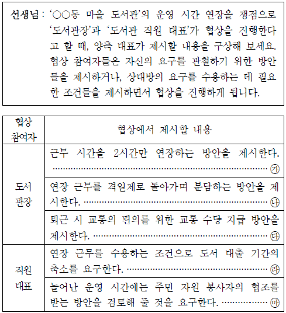
- ㉮
- ㉯
- ㉰
- ㉱
- ㉲
(정답률: 알수없음)
3. 위 발표에 대한 청중의 평가로 적절한 것은?(4번 공통지문 문제)
- 드론 촬영 기술과 관련된 과학적 원리를 설명해 주어서 발표 내용을 이해하기 쉬웠어.
- 드론 촬영과 일반 항공 촬영과의 차이를 분명히 드러내어 중심 내용이 부각되었군.
- 드론 촬영과 관련된 정보의 출처를 구체적으로 밝혀서 발표 내용에 믿음이 갔어.
- 드론과 관련된 다양한 산업 분야를 알려주어 진로 선택에 도움이 되었어.
- 드론 촬영의 절차를 순서대로 상세하게 안내하여 이해도를 높였군.
(정답률: 알수없음)
4. <보기>의 자료를 활용하여 ‘초고’를 수정ㆍ보완하고자 할 때 적절하지 않은 것은? [3점](6번 공통지문 문제)
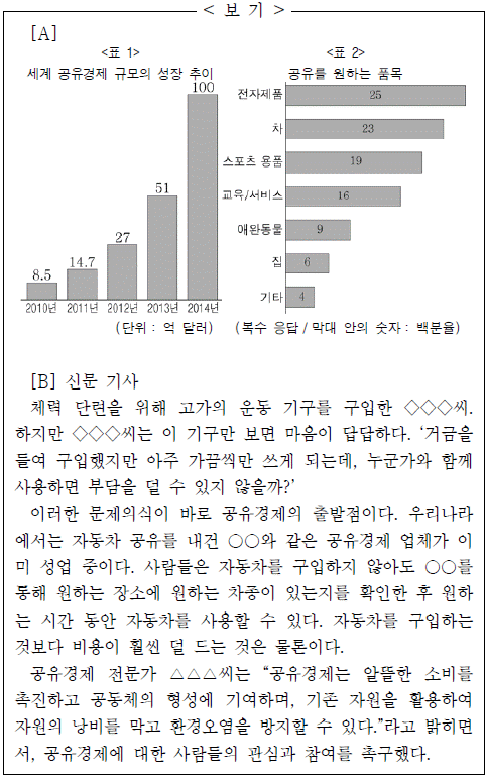
- [A]의 <표 1>을 활용하여 첫 번째 문단에서 공유경제가 널리 확산되고 있다는 내용을 구체화한다.
- [B]에 제시된 ‘신문 기사’의 도입부를 활용하여 두 번째 문단에서 공유경제 출현 이전의 상황에 대한 사례로 언급한다.
- [A]의 <표 2>를 활용하여 세 번째 문단에서 공유 가능한 품목의 예를 추가한다.
- [B]에 제시된 자동차 공유 사례를 활용하여 세 번째 문단에서 언급한 공유경제 활동의 단계를 품목별로 세분화한다.
- [B]에 제시된 전문가의 인터뷰를 인용하여 마지막 문단에서 언급한 공유경제의 장점과 관련된 내용을 구체화한다.
(정답률: 알수없음)
5. ⓐ～ ⓔ를 고쳐 쓰기 위한 방안으로 적절하지 않은 것은?(6번 공통지문 문제)
- ⓐ : 의미의 중복을 피하기 위해 ‘지나친’을 삭제한다.
- ⓑ : 조사의 사용이 잘못되었으므로 ‘확보함으로서’로 고친다.
- ⓒ : 앞뒤 내용을 고려하여 ‘그러나’로 고친다.
- ⓓ : 글 전체의 통일성을 고려하여 삭제한다.
- ⓔ : 문장 성분 간의 호응을 고려하여 ‘연결된’으로 고친다.
(정답률: 알수없음)
6. 다음은 학생이 초고를 쓰고 스스로 점검한 내용이다. 초고의 마지막에 추가할 내용으로 가장 적절한 것은?(9번 공통지문 문제)
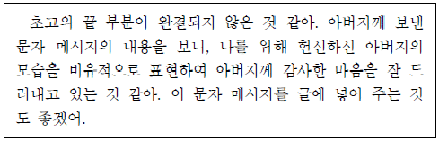
- “아버지께서 물려주신 마음의 재산을 소중하게 잘 지킬게요. 늘 다른 사람을 배려하며 살겠습니다.”라고.
- “제게 아버지는 어두운 바다의 등대 같은 존재입니다. 제가 나아갈 길을 가르쳐 주셔서 감사합니다.”라고.
- “어린 시절 아버지와의 추억이 저에게는 가장 소중해요. 아버지께서 주신 사랑을 잊지 않고 보답하겠습니다.”라고.
- “아버지로부터 성실한 삶의 가치에 대해 배웠습니다. 오늘도 감사하는 마음으로 주어진 일을 열심히 해 나갈게요.”라고.
- “제게 아버지는 바람을 막아 주고 그늘을 만들어 주는 나무 같은 존재입니다. 아버지께서 제게 주신 사랑에 감사합니다.”라고.
(정답률: 알수없음)
7. <보기>의 (가)~(다)에 들어갈 내용으로 적절한 것은? (순서대로 (가), (나), (다)) [3점]
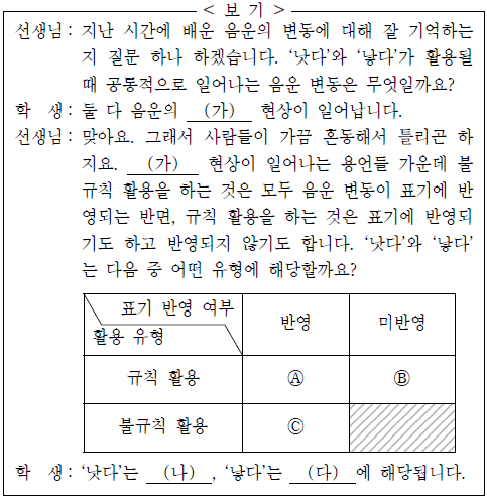
- 축약, (A), (C)
- 탈락, (B), (A)
- 탈락, (C), (B)
- 교체, (B), (C)
- 교체, (C), (B)
(정답률: 알수없음)
8. 밑줄 친 말 가운데 <보기>의 [A]의 사례로 추가하기에 적절 하지 않은 것은? (문제 오류로 실제 시험장에서는 1, 3번이 정답 처리 되었습니다. 여기서는 1번을 누르면 정답 처리 됩니다.)
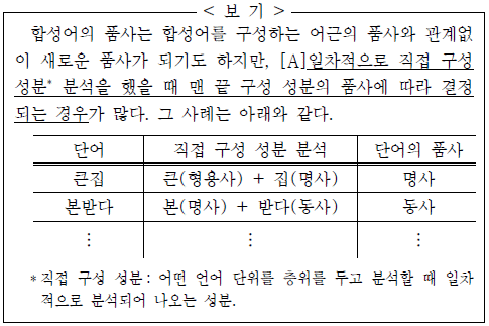
- 입학했던 때가 엊그제 같은데 어느새 3학년이구나.
- 그는 농구는 몰라도 축구 실력만큼은 남달랐다.
- 아침에 늦잠이 들어 하마터면 지각할 뻔했다.
- 길을 가는데 낯선 사람이 알은척을 했다.
- 하루빨리 여름방학이 왔으면 좋겠다.
(정답률: 알수없음)
9. <보기>를 참고할 때, 다음 중 ‘이어진문장’에 해당하지 않는 것은?
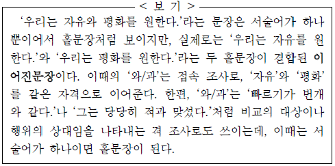
- 나는 시와 소설을 좋아한다.
- 그녀는 집과 도서관에서 공부했다.
- 고향의 산과 하늘은 예전 그대로였다.
- 성난 군중이 앞문과 뒷문으로 들이닥쳤다.
- 그 사람과 나는 오래 전부터 서로 사귀어 왔다.
(정답률: 알수없음)
10. <보기>를 바탕으로 ‘속’과 ‘안’에 대해 탐구한 내용으로 적절하지 않은 것은?
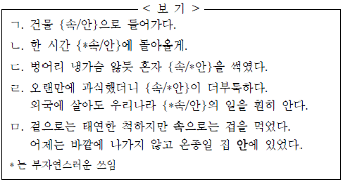
- ㄱ을 보니 ‘속’과 ‘안’은 ‘사물이나 영역의 내부’라는 공통 의미를 지닌 유의어로군.
- ㄴ을 보니 ‘속’과 달리 ‘안’은 시간적 범위를 한정할 때 쓰이는군.
- ㄷ을 보니 ‘안’과 달리 ‘속’은 관용구에 사용되어 사람의 마음을 가리킬 때 쓰이는군.
- ㄹ을 보니 ‘속’은 추상적인 대상, ‘안’은 구체적인 대상의 내부를 가리키는군.
- ㅁ을 보니 ‘속’은 ‘겉’, ‘안’은 ‘바깥’과 각각 반의 관계에 있군.
(정답률: 알수없음)
11. <보기>는 문법적으로 바르지 않은 문장 유형 중 일부이다. <보기>의 어느 경우에도 해당하지 않는 것은?
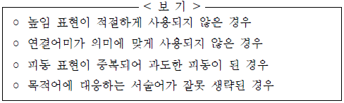
- 고등학생이라면 모름지기 그 정도는 다 할 줄 안다.
- 예상치 못했던 결과가 나온다면 실망할 필요가 없다.
- 그 복지 시설은 지금 민간에 위탁 운영되어지고 있다.
- 특별한 일이 없을 때는 텔레비전이나 라디오를 듣는다.
- 이것은 어머니가 외할머니한테 생신 선물로 드린 것이다.
(정답률: 알수없음)
12. 윗글에 나타난 아담 스미스의 생각을 파악하기 위해 질문을 만들어 보았다. 적절한 질문이 아닌 것은?(16번 공통지문 문제)
- 이기적인 행위는 어떻게 도덕적인 것으로 승인받을 수 있는가?
- 개인은 왜 이기적인 감정을 느끼거나 이기적인 행위를 하게 되는가?
- 인간에 내재하는 어떠한 성질에서 사회 질서의 원리를 찾을 수 있는가?
- 관찰자는 타인의 행위와 동감이 이루어지는 과정에서 무엇을 상상하는가?
- 자신의 행위에 대해 도덕적 판단을 하는 자기 안에 있는 존재는 누구인가?
(정답률: 알수없음)
13. <보기>는 아담 스미스에게 영향을 준, 한 철학자의 견해이다. 윗글의 ㉠과 <보기>에 나오는 [A]의 공통점이 아닌 것은? [3점](16번 공통지문 문제)
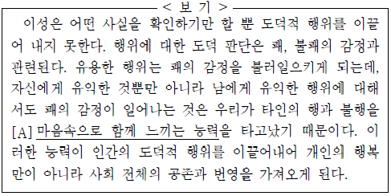
- 노력에 의해 형성되는 것이 아니라 선천적인 것이다.
- 타인의 감정을 다른 사람이 공유할 수 있는 능력이다.
- 유용성을 기준으로 하여 행위에 대한 감정을 촉발한다.
- 개인을 위해서만이 아니라 사회 전체의 공존을 위해 기능한다.
- 이타적 행위는 물론 이기적 행위에 대한 도덕적 판단을 할 때에도 작용한다.
(정답률: 알수없음)
14. ㉡을 뒷받침할 수 있는 진술로 가장 적절한 것은?(16번 공통지문 문제)
- 정의와 달리 자혜는 특별히 강조하지 않아도 존재한다.
- 사회의 존속을 위해서는 이타적 행위가 확대되어야 한다.
- 동감을 얻을 수 없는 이기적 행위는 타인에게 피해를 준다.
- 정의가 제대로 지켜지는 사회에서는 결과적으로 자혜도 지켜진다.
- 인간은 자혜보다 정의와 관련된 행위를 더 도덕적인 것으로 평가한다.
(정답률: 알수없음)
15. 윗글의 내용과 일치하지 않는 것은?(20번 공통지문 문제)
- 경제가 장기적으로 성장하는 국가에서도 실질 GDP가 단기적으로 하락하는 기간이 있을 수 있다.
- 민간 기업의 투자 지출 변화에서 오는 충격을 경기 변동의 주원인으로 보는 입장에서는 정부의 적절한 총수요 관리 정책을 통해 경기 변동을 억제할 수 있다고 본다.
- 실물적 경기 변동 이론에서는 유가 상승이 생산 과정에서 쓰이는 에너지를 감소시켜서 생산량을 늘리는 실물적 요인으로 작용한다고 본다.
- 실물적 경기 변동 이론에서는 대규모로 일어나는 경기 변동을 설명하기 어렵다는 점을 들어 화폐적 경기 변동 이론을 비판한다.
- 경제적 협력이 밀접한 두 국가 사이에서 한 국가의 경기 변동이 다른 국가의 경기 변동에 영향을 미칠 수 있다고 보는 입장이 있다.
(정답률: 알수없음)
16. ㉠을 참고할 때, [A]에 들어갈 내용으로 가장 적절한 것은?(20번 공통지문 문제)
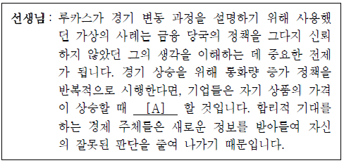
- 자신들의 합리적 기대와는 무관하게 생산량을 늘리려
- 통화량이 계속 증가할 것이라고 보고 생산량을 늘리려
- 근로자의 임금이 변화되는 것을 고려하여 생산량을 늘리려
- 소비자들의 선호가 수시로 바뀔 수 있다고 보고 생산량을 늘리지 않으려
- 전반적인 물가 수준이 상승한 것이라고 판단하여 생산량을 늘리지 않으려
(정답률: 알수없음)
17. ⓐ와 문맥적 의미가 가장 유사한 것은?(20번 공통지문 문제)
- 얼마 후에 꺼져 가던 불꽃이 다시 일어났다.
- 그녀는 싸움이 일어난 틈을 타서 그 자리를 떠났다.
- 그는 친구의 말에 화가 일어났지만 곧 마음을 가라앉혔다.
- 구성원들이 적극적으로 일어나 동아리의 위기를 해결하였다.
- 체육 대회가 가까워질수록 승리에 대한 열기가 다시 일어났다.
(정답률: 알수없음)
18. 윗글의 내용으로 보아 ‘단토’의 견해에 부합하기 어려운 진술은?(24번 공통지문 문제)
- 오늘날의 예술이 무엇인가 알기 위해서는 감각으로 경험하는 것을 넘어 철학적으로 사고하는 접근이 필요하다.
- 예술 작품의 본질을 정의하려던 과거의 시도가 결국 실패한 것은 그것을 근본적으로 정의할 수 없기 때문이다.
- 실제 사물과 달리, 예술 작품은 그것을 예술로 존재하게 하는 지식과 이론 등에 의해 예술 작품으로 인정받는다.
- 예술의 종말 이후에도 시각적 재현을 위주로 하는 그림은 그려지겠지만, 그것이 재현의 내러티브를 발전시키지는 않는다.
- 특정한 사고는 특정한 발전 단계에 이르러서야 생각될 수 있으므로 한 시기에 예술 작품일 수 있는 것이 다른 시기에는 예술 작품으로 간주되지 않을 수도 있다.
(정답률: 알수없음)
19. 윗글을 바탕으로 <보기>를 이해한 내용으로 적절하지 않은 것은? [3점](24번 공통지문 문제)
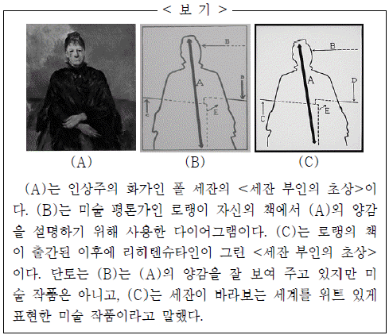
- (A)는 대상의 외관을 재현한 것으로, ‘바자리의 내러티브’에 의해 미술 작품으로서의 지위를 가진다.
- (B)는 예술에 대한 철학적 의문을 드러내지 못하고 있다는 점에서 (A)와 다르다.
- (C)를 미술 작품이라 한 것은 예술이 철학적 단계에 이르러 그 이전의 내러티브가 종결되었음을 보여 준다.
- (A)와 (C)가 미술 작품이라는 것을 판단하기 위해서는 당대 예술 상황을 주도하는 믿음 체계에 대한 지식이 선행적으로 필요하다.
- (B)와 (C)는 지각적으로 유사해 보이지만, (B)는 해석되어야 할 주제를 가지고 있지 않아서 미술 작품이라고 할 수 없다.
(정답률: 알수없음)
20. 윗글을 바탕으로 <보기>에 대해 이해한 내용으로 적절하지 않은 것은? [3점](27번 공통지문 문제)
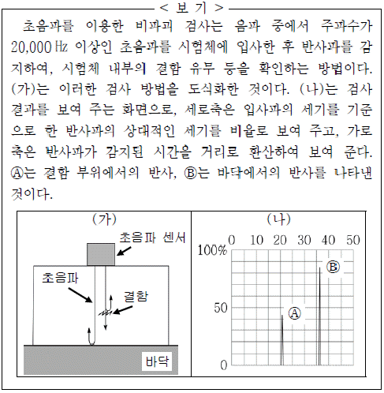
- (가)에서 결함 부위에서 반사된 초음파는 입사파보다 진폭이 작겠군.
- (가)에서 시험체의 두께가 두꺼울수록 높은 주파수의 초음파를 이용해야겠군.
- (나)에서 (A)와 (B)를 비교하면, 결함 부위의 음파 저항과 그 주변의 음파 저항의 차이보다 시험체의 음파 저항과 바닥의 음파 저항의 차이가 크다고 볼 수 있겠군.
- (나)에서 결함 부위가 초음파 센서와 더 가까웠다면, (A)는 현재보다 왼쪽에 나타났겠군.
- (나)에서 (B)가 100 %가 되지 않은 것은, 초음파의 에너지 일부가 시험체에 흡수된 것이 원인이라고 할 수 있겠군.
(정답률: 알수없음)
21. ㉠과 ㉡에 대해 이해한 내용으로 가장 적절한 것은?(27번 공통지문 문제)
- ㉠과 ㉡은 모두 역학적 파동으로 인한 매질의 특성 변화를 보여 준다.
- ㉠과 ㉡은 모두 역학적 파동의 진행에 따른 에너지의 증가를 보여 준다.
- ㉠과 ㉡은 모두 매질의 경계에서 생겨나는 역학적 파동의 변화를 보여 준다.
- ㉠은 파동의 진폭이 커지는 요인을, ㉡은 파동의 진폭이 작아지는 요인을 보여 준다.
- ㉠은 파동이 매질에 입사되는 양상을, ㉡은 파동이 매질에서 흡수되는 양상을 보여 준다.
(정답률: 알수없음)
22. ⓐ~ ⓔ의 사전적 의미로 적절하지 않은 것은?(27번 공통지문 문제)
- ⓐ: 일정한 간격을 두고 되풀이하여 진행하거나 나타나는.
- ⓑ: 물질을 구성하는 미세한 크기의 물체.
- ⓒ: 물체가 나아가거나 일이 진행되는 빠르기.
- ⓓ: 목적한 곳이나 수준에 다다름.
- ⓔ: 일을 잘못하여 뜻한 대로 되지 아니하거나 그르침.
(정답률: 알수없음)
23. <보기>를 바탕으로 윗글을 이해한 내용으로 적절하지 않은 것은? [3점](31번 공통지문 문제)
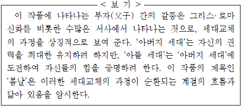
- 재산을 독점하고 ‘자식들’에게 밭일을 시키는 ‘아버지’는 ‘차남’을 비롯한 ‘자식들’에게 도전의 대상으로 인식되고 있음을 알 수 있다.
- 젊어지고자 하는 ‘아버지’의 욕심은 자신의 권력을 유지하고 자 하는 욕구에서 비롯된 것으로, 이는 ‘아버지’와 ‘자식들’간에 갈등의 요인으로 작용한다.
- ‘아버지가 자식들에게 조금씩만 나눠줬어도 이런 일은 안 당할 텐데’라는 ‘차남’의 대사는 세대교체의 과정에서 유발된 ‘아버지’와의 갈등에 대한 후회를 드러낸다.
- 여름날의 대청마루에 걸터앉은 ‘아버지’의 쇠약한 모습은 일련의 갈등 과정 이후 자신이 지녔던 권력을 더 이상 유지하지 못하는 기존 세대를 표상한다.
- ‘이렇게 살고 가면 되는 것’이라고 말하는 ‘아버지’의 대사에서, 세대가 교체되는 과정의 속성을 깨닫고 이에 순응하게 되는 ‘아버지’의 자각을 확인할 수 있다.
(정답률: 알수없음)
24. <보기>를 바탕으로 윗글을 설명한 내용으로 적절하지 않은 것은?(31번 공통지문 문제)
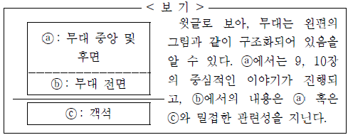
- ⓐ에 등장하는 인물과 ⓑ에 등장하는 인물은 서로 다른 시ㆍ공간적 배경에 위치하고 있다.
- ⓑ에서의 ‘차남’의 발화는 ⓒ의 관객을 향한 것이라 볼 수 있다.
- ⓑ에서 제시된 ‘편지’의 내용은 ⓐ에서 진행된 ‘[9장]’의 사건에 대한 ‘차남’의 인식을 드러낸다.
- ⓑ에서 제시된 ‘편지’의 내용은 ⓒ에 있는 관객의 공감을 유도하여 ⓐ에서 진행되는 사건 전개에 영향을 미친다.
- ⓑ에서 제시된 편지의 내용으로 보아 ‘아버지’에 대한 ‘차남’의 태도가 ⓐ에서와는 달라져 있음을 알 수 있다.
(정답률: 알수없음)
25. 윗글의 내용을 잘못 이해한 것은?(34번 공통지문 문제)
- ‘천 씨’는 ‘여자’를 찾아온 ‘사내(오라비)’를 보고, 그가 ‘여자’의 오빠임을 알았다.
- ‘여자’와 ‘사내(오라비)’는 두 사람의 관계에 대해 서로 말하지 않고 헤어졌다.
- ‘사내(오라비)’가 찾아온 날 밤, ‘여자’는 그의 장단에 맞추어 소리를 했다.
- ‘여자’는 출생 직후 어머니 없이 아버지의 손에서 자랐다.
- ‘천 씨’는 ‘여자’의 이야기를 이끌어내고 있다.
(정답률: 알수없음)
26. <보기>를 바탕으로 윗글을 이해한 내용으로 적절하지 않은 것은? [3점](34번 공통지문 문제)
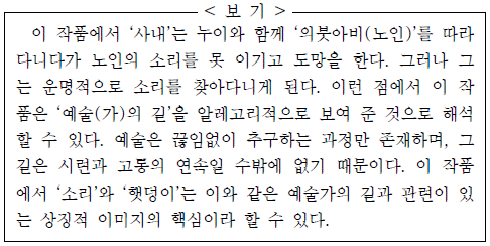
- ‘사내’가 ‘여자’에게서 ‘뜨거운 햇덩이’를 보았다고 했음에도 다시 길을 떠났다는 것은, 예술의 길이 끝이 없는 과정임을 의미한다고 볼 수 있다.
- ‘사내’가 ‘소리’로 상징되는 노인에게 ‘살기’를 품었으면서도 결국 해치지 못한 것은, 그가 예술의 길을 포기할 수 없었기 때문인 것으로 볼 수 있다.
- ‘사내’가 버리고 살 수 없는 ‘소리’가 ‘고통스런 얼굴’을 하고 있다는 것은, 예술의 길을 걷는 과정에서 겪게 되는 시련과 고통의 의미로 해석할 수 있다.
- ‘사내’가 ‘여자’에게 보여 준 장단의 솜씨가 옛날의 노인의 솜씨 그대로였다는 것은, ‘사내’가 ‘햇덩이’로 상징되는 ‘소리’의 절대적 경지에 도달했음을 의미한다고 볼 수 있다.
- ‘사내’가 노인의 ‘소리’를 못 이기고 도망을 쳤음에도 끊임없이 ‘소리의 진짜 얼굴’을 찾아다니는 것은, 그가 예술가의 길을 ‘숙명’으로 여기는 인식과 관련이 있다고 할 수 있다.
(정답률: 알수없음)
27. ㉠~ ㉤에 대해 이해한 내용으로 적절하지 않은 것은?(37번 공통지문 문제)
- ㉠ : ‘대길이 아저씨’에게 한글을 배워 세상에 대해 알아 갈 수 있는 눈을 갖게 되었음을 보여 준다.
- ㉡ : ‘대길이 아저씨’가 낮은 신분임에도 불구하고 그를 존중하는 태도가 공동체 내부에 형성되어 있었음을 보여 준다.
- ㉢ : ‘대길이 아저씨’가 현실 세계에 대한 대안의 공간으로 순수한 자연의 세계를 동경하고 있었음을 보여 준다.
- ㉣ : 이기적인 삶을 멀리하고자 했던 ‘대길이 아저씨’의 가치관이 화자에게도 전달되었음을 보여 준다.
- ㉤ : ‘대길이 아저씨’가 화자에게 특별한 존재로 남아 변함없이 화자의 삶을 이끌어주었음을 보여 준다.
(정답률: 알수없음)
28. <보기>를 바탕으로 (나)를 감상한 내용으로 적절하지 않은 것은?(37번 공통지문 문제)
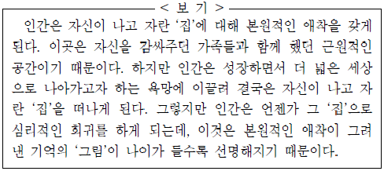
- ‘사랑방 건넌방 헛간 안방을 오가며’ 놀이를 즐기고 있는 화자의 모습은 가족들이 감싸주는 공간에서 즐거운 유년 시절을 보낸 화자를 떠오르게 하는군.
- ‘이 그림 속’에서 ‘더없이 행복하다’고 한 것은 가족들과 함께한 유년의 따뜻했던 기억의 ‘그림’이 화자에게 본원적인 애착을 유발하기 때문이겠군.
- ‘버스를 타고 기차를 타고’ 어려서부터 외지로 떠돈 것은 더 넓은 세상으로 나아가고자 하는 욕망에 화자가 이끌렸음을 보여 주는 것이겠군.
- ‘딴 세상을 헤매다가도 돌아오면 다시 그 자리니’라고 한 것은 화자가 ‘나의 집’으로 심리적인 회귀를 하게 되었다는 것이겠군.
- ‘할아버지보다도 아버지보다도 나이가 많아지면서’는 화자가 ‘이 틀 속’에서 벗어날 수 있는 나이가 되었다는 것이겠군.
(정답률: 알수없음)
29. ㉠~ ㉤에 대한 설명으로 적절하지 않은 것은?(40번 공통지문 문제)
- ㉠: 과거와 현재의 상황을 대조하여 상대방의 동정심을 자아내고 있다.
- ㉡: 자신이 처한 상황을 들어 상대방의 제안이 실현 불가능함을 드러내고 있다.
- ㉢: 자신을 낮춤으로써 상대방에 대한 존경의 마음을 드러내고 있다.
- ㉣: 상대에게 감사의 뜻을 표하면서도 폐를 끼칠 것을 염려하는 마음을 밝히고 있다.
- ㉤: 자신의 행위에 당위성을 부여하여 상대방이 느끼는 부담을 덜어주고 있다.
(정답률: 알수없음)
30. <보기>를 참고하여 윗글을 이해한 내용으로 적절하지 않은 것은? [3점](40번 공통지문 문제)
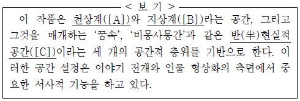
- [C]에서는 [A]의 뜻에 따라 [B]에서의 사건이 전개되는 방향을 ‘사 씨’에게 예고하고 있다.
- [C]의 ‘꿈속’은 ‘사 씨’가 [B]에서 지켜나가야 할 삶의 지표와 그녀의 예정된 미래의 모습을 알리고 있다.
- [C]의 ‘꿈속’에서 일어난 사건은 ‘사 씨’가 [B]에서 느끼고 있는 미래에 대한 불안감을 심화하고 있다.
- [B]의 존재인 ‘사 씨’가 [C]의 ‘꿈속’에서 만나는 ‘장강’, ‘반첩여’ 등의 인물은 그녀의 현숙한 인물됨과 관련지을 수 있다.
- [B]에서 ‘여승’이 ‘사 씨’를 구하기 위해 ‘군산’에서 온 것은 [C]의 ‘비몽사몽간’을 통해 [A]의 뜻이 작동한 것으로 볼 수 있다.
(정답률: 알수없음)
31. <보기>와 <자료>를 참고하여 윗글을 감상한 내용으로 적절 하지 않은 것은? [3점](43번 공통지문 문제)
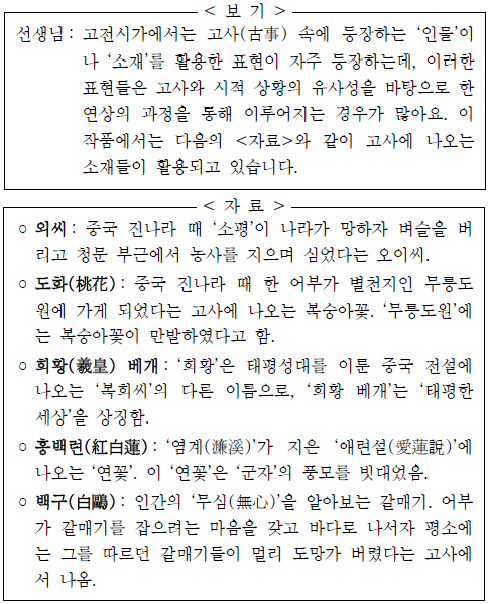
- [A]에서 ‘외씨’를 활용한 것은, ‘외씨’를 뿌리며 사는 ‘산옹’의 소박한 삶에서 ‘소평’의 삶이 연상되었기 때문이겠군.
- [B]에서 ‘도화’를 활용한 것은, ‘시내 길’에서 본 ‘도화’의 모습에서 ‘복숭아꽃’이 만발한 ‘무릉도원’이 연상되었기 때문이 겠군.
- [C]에서 ‘희황 베개’를 활용한 것은, ‘풋잠’을 자다 깨며 느낀 평안함에서 ‘희황’의 태평한 시대가 연상되었기 때문이겠군.
- [D]에서 ‘홍백련’을 활용한 것은, ‘만산’의 연꽃 ‘향기’를 맡으면서 ‘염계’가 말한 ‘군자’의 덕이 연상되었기 때문이겠군.
- [E]에서 ‘백구’를 활용한 것은, ‘무심코 한가’한 ‘주인’의 모습과 갈매기를 잡으려던 ‘어부’의 모습이 같은 것으로 연상되었기 때문이겠군.
(정답률: 알수없음)
32. 윗글의 ㉠과 <보기>를 비교한 내용으로 적절하지 않은 것은?(43번 공통지문 문제)
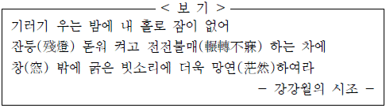
- ㉠의 ‘매창’과 <보기>의 ‘창’은 모두 ‘산옹’과 ‘나’가 각각 머물고 있는 곳의 안과 밖을 연결하는 통로의 역할을 하고 있다.
- ㉠의 ‘아침볕’은 ‘산옹’이 맞고 있는 아침의 분위기를 자아내고, <보기>의 ‘기러기 우는 밤’은 ‘나’가 지새고 있는 밤의 분위기를 자아내고 있다.
- ㉠의 ‘향기’는 ‘산옹’의 잠을 깨우는 역할을 하고, <보기>의 ‘굵은 빗소리’는 ‘나’가 잠들지 못하는 데 영향을 주고 있다.
- ㉠의 ‘할 일’은 ‘산옹’이 세상을 위해 해야 할 과업이고, <보기>의 ‘잔등 돋워’는 ‘나’가 자신을 위해 해야 할 일이다.
- ㉠의 ‘곧 없지도 아니하다’에서는 ‘산옹’의 생활에 대한 긍정적 인식이 드러나고, <보기>의 ‘더욱 망연하여라’에서는 ‘나’ 의 처지에 대한 애상감이 드러나 있다.
(정답률: 알수없음)
[E]의 경우, 사례를 들어 청중의 이해를 돕고, 문제점을 제기하면서 보완할 수 있는 방안을 제시하는 것이 목적이다. 따라서, 청중의 이해를 돕고, 문제점을 해결할 수 있는 방안을 제시하는 것이 중요하다.